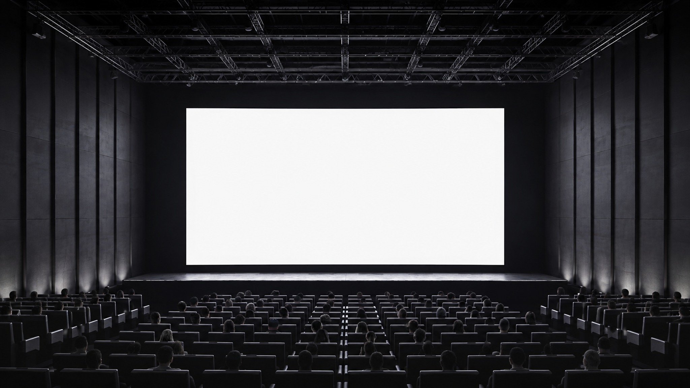
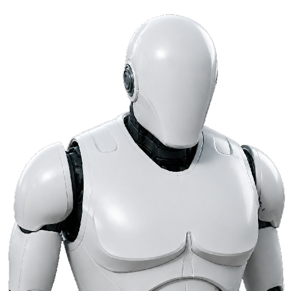
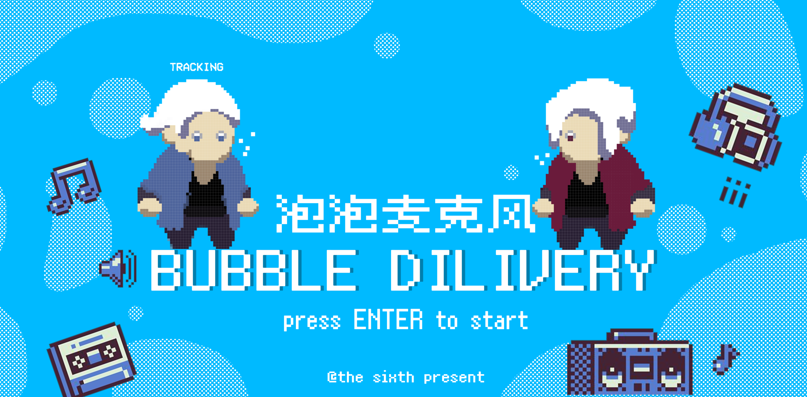
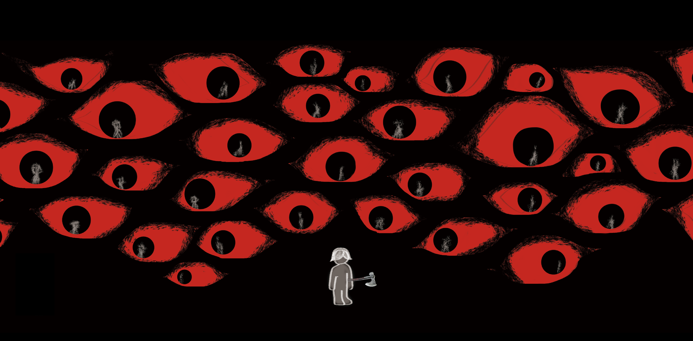
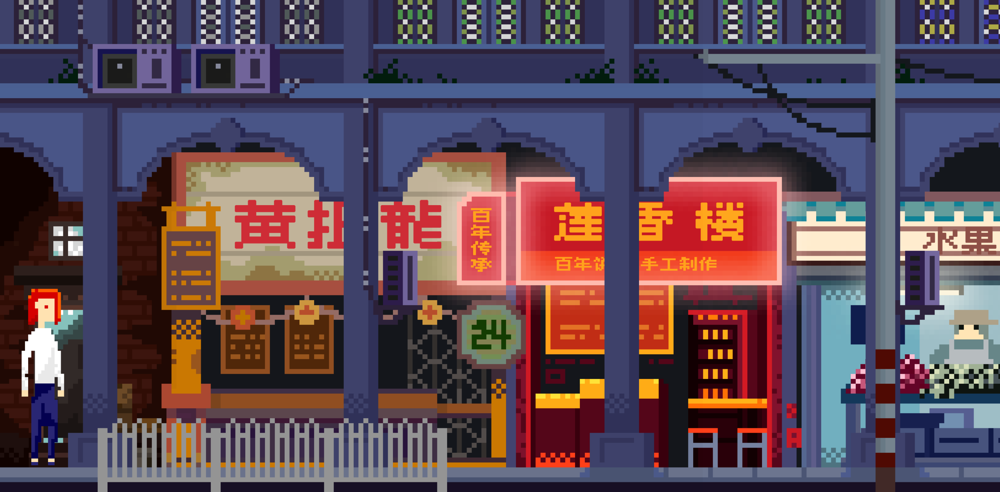

Work
Selected work across intelligent systems, interaction, and play.
View all
( N5 )
A space for experiments, obsessions, and the instincts behind the work.

Course Project · 3D Artist
A self-directed world-building study in atmosphere and spatial narrative.



GAME DEMOS
A series of Global Game Jam demos and indie games.



View all
( N6 )
SO WE BEAT ON, BOATS AGAINST THE CURRENT, BORNE BACK CEASELESSLY INTO THE PAST.